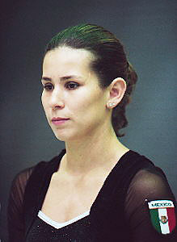

Brenda Magaña (MEX)
1998 Central American Games AA Gold Medalist

Brenda was born on July 27, 1977.
Competition Results
1990
Caribbean Games: 2nd Team, 2nd AA
Jr. Pan American Games: 9th AA
1991
Pan American Games: 7th FX
World Championships: 22nd Team
1992
Jr. Pan American Games: 9th AA
World Championships: 61st FX (prelims)
1993
Central American Games: 2nd FX
1994
World Championships (Brisbane): 50th AA, 28th FX (prelims)
1995
American Cup: 13th AA
Intl. Mixed Pairs: 12th Team
1996
American Cup: 17th AA
Intl. Mixed Pairs: 14th Team
Swiss Cup: 6th V
1998
Bluewater International: 9th AA
Central American Games: 1st AA
Copa Gimnastica: 10th AA, 4th V, 4th FX
Pacific Alliance Championships: 2nd V
1999
American Cup: 16th AA
2000
Copa Gimnastica: 5th V, 6th FX
2001
DTB Cup: 8th V
MEX Championships: 3rd AA
University Games: 18th AA
2002
Central American Games: 4th AA, 1st V, 1st FX
French International: 8th V, 14th UB, 17th FX
Friendship Classic: 4th AA, 1st FX, 3rd V
MEX Championships: 1st AA
Pacific Alliance Championships: 18th AA, 4th V
Puerto Rico Cup: 4th AA
USA-MEX Dual Meet: 4th AA
World Championships: 8th FX, 11th V (semis)
2003
Central American Games: 1st Team, 1st V, 1st FX
Pan American Games: 10th AA, 2nd FX, 3rd V
World Championships: 36th AA
2004
MEX Championships: 1st AA
Olympic Games: 58th AA (prelims)
Pacific Alliance Championships: 23rd AA, 4th FX, 5th V
World Cup: 5th B, 5th FX, 6th V
This page was created on September
02, 2006.
© Gymn Forum